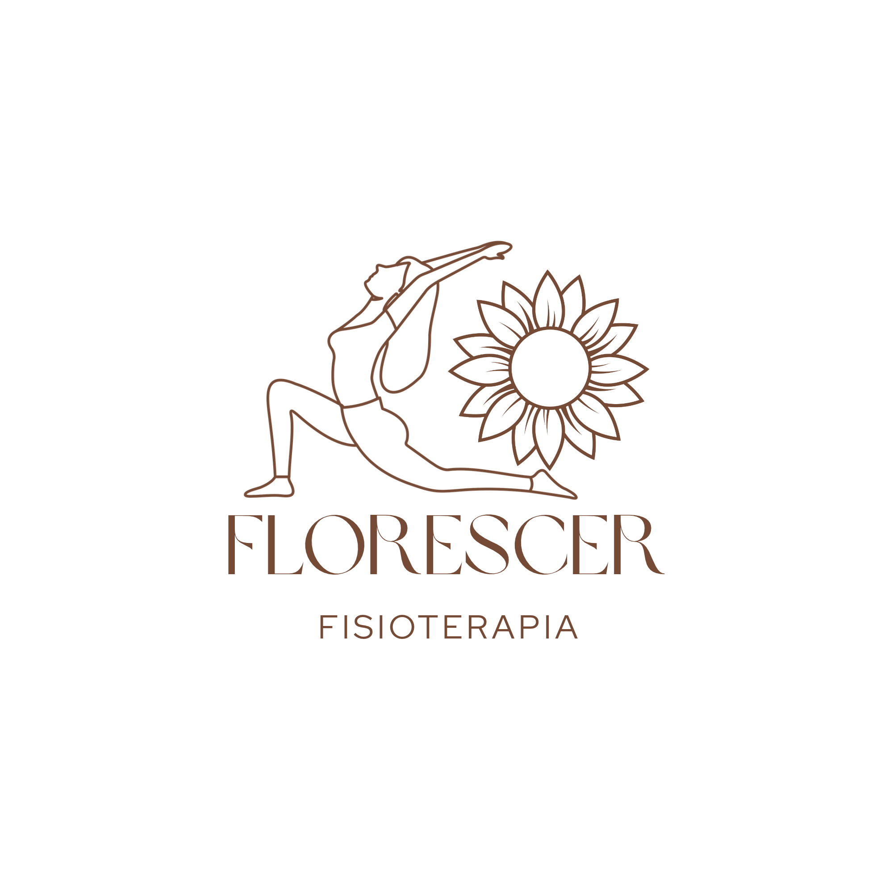
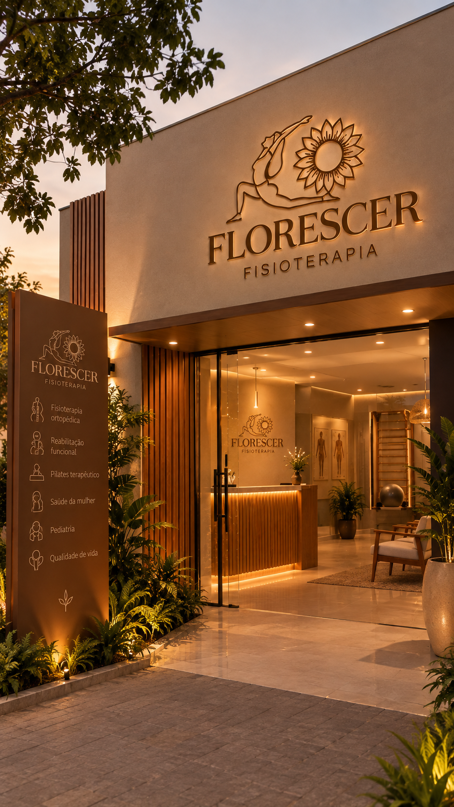
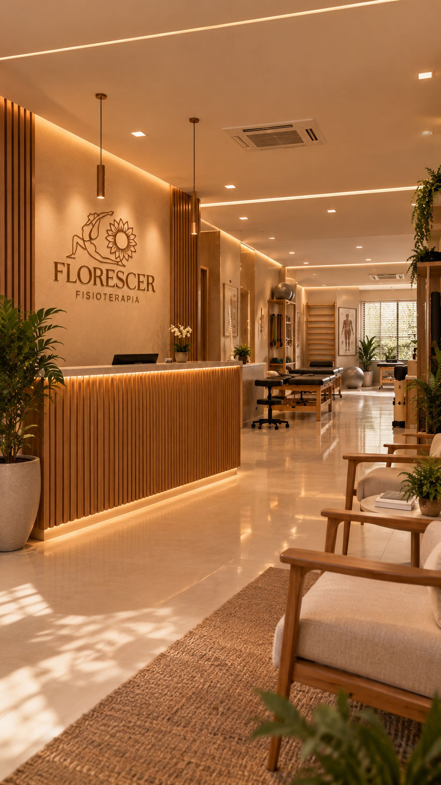

01
Reabilitação e movimento
Acompanhamento voltado à mobilidade, funcionalidade e retomada gradual das atividades.

FLORESCER FISIOTERAPIACuidado em cada movimento
Fisioterapia com acolhimento, atenção e respeito ao seu ritmo. Um cuidado pensado para acompanhar sua evolução, um movimento de cada vez.

O nome Florescer representa renovação, aprendizagem e dedicação ao cuidado com o próximo. Acreditamos que cada pessoa tem seu próprio caminho e que cada conquista merece ser valorizada.
Por meio da fisioterapia, queremos incentivar o desenvolvimento, o movimento e a busca por uma vida mais saudável, com cuidado humanizado e atenção individual.
Atendimento com escuta, orientação e cuidado em cada etapa da sua jornada.
Acompanhamento voltado à mobilidade, funcionalidade e retomada gradual das atividades.
Uma abordagem atenta às necessidades, aos objetivos e ao ritmo de cada pessoa.
Movimentos e recursos terapêuticos definidos conforme avaliação profissional.
Os atendimentos e recursos indicados são definidos após avaliação fisioterapêutica. Consulte a equipe sobre os serviços disponíveis.

Inspirado nos tons terrosos, na natureza e na sensação de acolhimento, o conceito da Florescer combina madeira, bege, marrom e verde para criar uma atmosfera tranquila e convidativa.
“Cada pequeno avanço também é uma forma de florescer.”
Fale com a Florescer para tirar dúvidas e consultar horários de atendimento.
Entre em contato pelo WhatsApp.
Adicione aqui o endereço da clínica.
Consulte a disponibilidade com nossa equipe.
Estamos prontas para ouvir você e ajudar a encontrar o melhor caminho.
Conversar pelo WhatsApp Configure o número no arquivoscript.js antes de publicar.